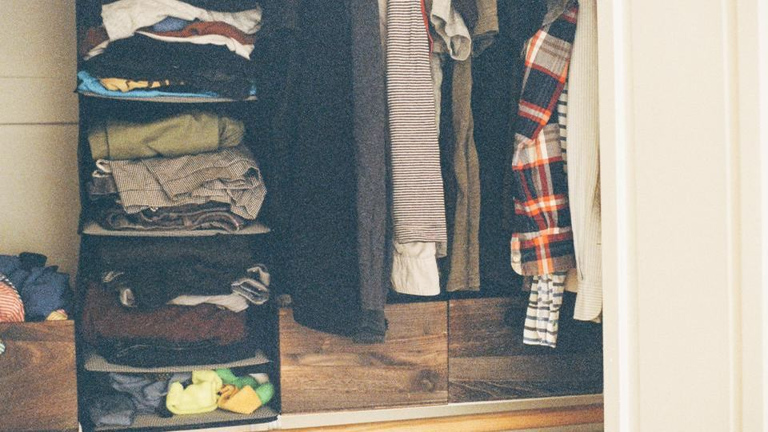
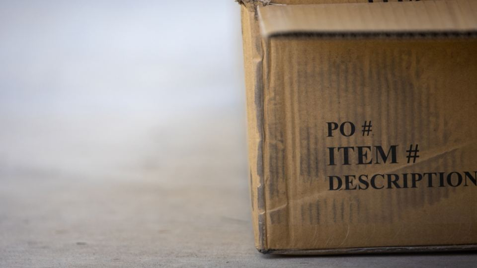

クローゼットの奥に、しばらく使っていないブランドのバッグや財布がしまってある、という方は少なくありません。手放したい気持ちはあっても、平日は仕事で買取店の営業時間に間に合わず、休日にわざわざ持ち込むのも負担に感じるものです。
ブランド品の宅配買取なら、自宅で箱に詰めて送るだけで査定を受けられます。この記事では、大切に使ってきたものを安心して任せるために、宅配買取を比べるときの観点と、申し込む前に確認しておきたい点をやさしく整理しました。
ブランド品の宅配買取とは｜こんな人に向いています
宅配買取は、申し込み後に届く箱や手持ちの段ボールに品物を詰めて発送し、届いた先で査定を受ける仕組みです。査定額に納得すれば成立して代金が振り込まれ、納得できなければキャンセルして返送してもらう、という流れが一般的です。
ブランド品を扱う宅配買取では、バッグや財布のほか、アクセサリーや時計、衣類などをまとめて送れることが多いです。店頭に足を運ばずに、自分のペースで「手放すかどうか」を決められるのが宅配買取の良さです。
- 店頭に行く時間がとれない方：集荷を頼めば、自宅から一歩も出ずに発送まで済ませられます
- 近くにブランド品の買取店がない方：地域を問わず、専門の査定を受けやすくなります
- 対面でのやりとりが気になる方：その場で金額を決める必要がなく、落ち着いて検討できます
- 複数の品物をまとめて整理したい方：バッグと財布、衣類などを一度に送れます
- 重いもの・かさばるものがある方：大きなバッグや複数点を持ち運ぶ手間が省けます
ブランド品の宅配買取の選び方｜失敗しない4つのポイント

1. 査定の分かりやすさと連絡の方法
ブランド品の査定では、ブランドや型番だけでなく、傷や汚れ、角のすれ、付属品の有無など、さまざまな点が見られます。どこがどう評価されたのかが分かる説明があると、金額に納得しやすくなります。
査定結果がメールやマイページで届くのか、電話で連絡が来るのかも、サービスによって違います。忙しい方は、自分の都合のよい時間に確認できる方法かどうかを見ておくと安心です。
2. キャンセルしたときの返送料と期限
宅配買取で気をつけたいのが、査定額に納得できずキャンセルしたときの扱いです。返送料が無料のサービスもあれば、自己負担になるサービスもあります。
また、査定結果の連絡から一定の期間内に返事をしないと、自動的に成立となる場合もあります。申し込む前に、キャンセルの方法・返送料・返事の期限の3つを確認しておくことが、後悔しないためのいちばんの備えです。
3. 梱包・配送のしやすさと補償
ブランドバッグは型崩れしやすく、アクセサリーや時計は小さくて紛失が心配な品物です。梱包用の箱や緩衝材を用意してもらえるか、自宅まで集荷に来てもらえるかは、手間と安心の両方に関わります。
配送中の事故に備えた補償があるかどうかも、確認しておきたい点です。高価なものを送る場合は、補償の範囲や上限について公式サイトで確かめておきましょう。
4. 扱っている品目と得意な分野
ブランド品の買取といっても、バッグや財布が中心のところ、ジュエリーや時計に詳しいところ、衣類もまとめて扱うところなど、サービスごとに特徴があります。
手放したいものの種類に合ったサービスを選ぶと、品物の価値をきちんと見てもらいやすくなります。ブランド品と一緒に本や家電なども整理したい場合は、総合的に扱うサービスを選ぶ方法もあります。
ポイント
迷ったときは、手放したい品物の中心がバッグなのか、ジュエリーや時計なのか、衣類も含むのかを先に決めてから比べると、候補を絞りやすくなります。
ブランド品の宅配買取サービスを比較
ブランド品を専門的に見てほしいなら専門店系、ブランド品と日用品をまとめて整理したいなら総合買取系、という見方で比べると選びやすくなります。それぞれの特徴を下の表にまとめました。
おすすめサービス比較表
| サービス | 送料・手数料 | 買取ジャンル | 特徴 | 申込み |
|---|---|---|---|---|
| イチオシセカンドストリート宅配買取 | 送料・査定料・キャンセル料無料 | ブランド品 | ブランド品専門の宅配買取。専門スタッフが査定 | 料金を見る |
| 2ブランドオフ宅配買取 | 公式サイトで確認 | ブランド品 | 店舗に行きにくい人も自宅から送れるブランド品の宅配買取 | 料金を見る |
| 3ネットオフ（ブランド＆総合） | 手数料無料 | ブランド品・総合 | ブランド品・金などをまとめて送れるネットオフの宅配買取 | 料金を見る |
※料金・内容は各社の公式情報・広告素材の記載をもとにした目安です（2026年10月時点）。最新の料金・条件は必ず公式サイトでご確認ください。
金額だけで決めるのではなく、査定の説明の丁寧さや、キャンセルのしやすさも含めて比べると、納得のいく手放し方につながります。
送る前にできる準備

少しの準備で、査定がスムーズに進み、品物の状態も伝わりやすくなります。無理のない範囲で取り組んでみてください。
- 付属品をそろえる：保存袋や箱、ギャランティカード、購入時のレシートなどがあれば一緒に送ります
- やさしく汚れを落とす：乾いた柔らかい布でほこりを払う程度にとどめ、強くこすったり洗剤を使ったりするのは避けます
- 中身を確認する：バッグのポケットにカードやレシート、鍵などが残っていないかを確かめます
- 写真を撮っておく：発送前の状態を記録しておくと、万が一のときにも落ち着いて確認できます
- 送るもののリストを作る：点数と品名を控えておくと、査定結果と照らし合わせやすくなります
一般的に、ブランド品の買取額は、ブランドや型、状態、付属品の有無、そのときの需要などによって大きく変わります。具体的な目安を知りたいときは、事前査定や問い合わせの窓口を設けているサービスもあるため、各社の公式サイトでご確認ください。
利用するときの注意点
注意
- 本人確認書類の準備：買取には法律にもとづく本人確認が必要です。運転免許証などの書類をどの方法で提出するか、事前に確認しておきましょう
- 自動成立の条件：査定結果への返事の期限を過ぎると成立とみなされる場合があります。連絡が来たら早めに確認するようにしましょう
- 状態による減額：傷やにおい、型崩れなどで金額が変わることがあります。気になる点は申し込み時に伝えておくと、やりとりがスムーズです
- 振込までの日数：成立から入金までの日数はサービスによって異なります。急ぎの場合は公式サイトで目安を確かめておきましょう
注意
本物かどうかが確認できない品物や、正規品の確認がとれないものは、買取を断られることがあります。譲り受けたものなど入手の経緯が分からない品物は、その旨を申し込み時に伝えておくと安心です。
よくある質問
古いバッグや、傷のあるものでも買い取ってもらえますか？
使用感のあるものや古いモデルでも、ブランドや状態によっては査定の対象になります。ただし、状態によっては買取が難しい場合もあるため、気になるときは事前に問い合わせてみてください。
箱やギャランティカードがなくても送れますか？
付属品がなくても受け付けているサービスは多いです。付属品がそろっていると評価につながる場合もあるため、手元にあるものは一緒に送るのがおすすめです。
査定額に納得できなかったら、どうなりますか？
キャンセルすれば品物は返送されます。返送料が無料かどうか、返事の期限がいつまでかはサービスごとに異なるため、各社の公式サイトでご確認ください。
ブランド品と一緒に、ほかのものも送れますか？
衣類や小物、本や家電などをまとめて受け付けているサービスもあります。扱っている品目は公式サイトで確認し、送る前に対象外のものが混ざっていないかを確かめておきましょう。
まとめ
この記事のポイント
- ブランド品の宅配買取は、店頭に行かずに自分のペースで手放すかどうかを決められる
- 査定の分かりやすさ、キャンセル時の返送料と期限、梱包と補償、扱う品目の4つを比べると選びやすい
- 付属品をそろえる、中身を確認するなど、送る前の小さな準備で安心して任せやすくなる
長く使ってきたものを手放すのは、気持ちの整理も必要なことです。急がずに条件を確かめて、納得できる形で次の持ち主へつないでみてください。